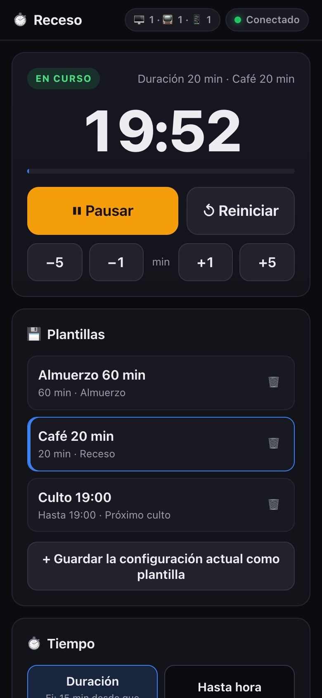
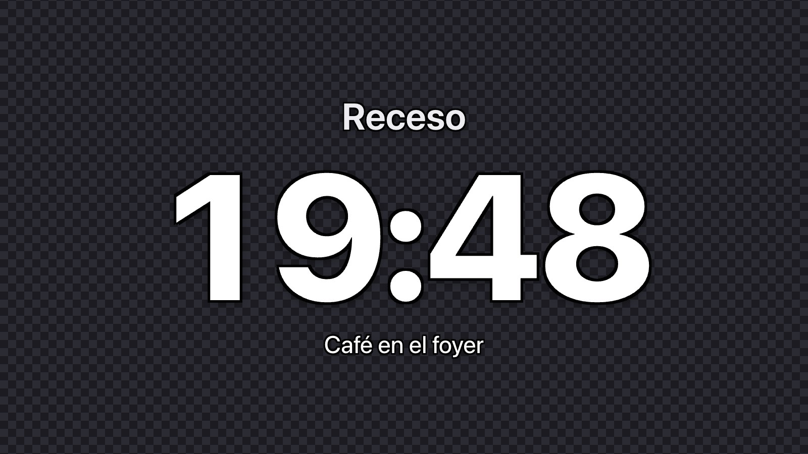

Cómo empezar
No hay que instalar nada. El programa corre en una PC del lugar y todos los equipos se conectan a esa PC por la red WiFi o por cable.
Descargá y descomprimí
Dejá la carpeta Receso en el escritorio o en un pendrive. No lo abras desde adentro del ZIP: los datos se guardan al lado del programa.
Abrilo con doble clic
Aparece una ventana con las direcciones y un código QR. Escanealo con el celular, conectado a la misma red, y se abre el panel de control.
Proyectá
En la PC del proyector abrí la dirección, tocá Proyección y apretá F para pantalla completa. Listo: manejás todo desde el celular.
Es normal en programas nuevos. Tocá Más información → Ejecutar de todas formas. Si el Firewall pregunta, permití Redes privadas.
Abrí Configuración del Sistema → Privacidad y seguridad y tocá Abrir igualmente. Alternativa en Terminal: xattr -d com.apple.quarantine receso-mac-*
Tiene que estar en la misma red que la PC. Algunas redes de hoteles aíslan los equipos: usá un router propio o el hotspot del celular.
Todo el receso, desde el celular
Panel pensado para operar en vivo: botones grandes, el tiempo siempre a la vista y nada de menús escondidos.
- ⏯️ Iniciar, pausar y ajustar±1 y ±5 minutos al instante. Reiniciar pide doble toque para evitar accidentes.
- 💾 Plantillas«Almuerzo 60 min», «Café 20 min», «Culto 19:00»: un toque y queda armada.
- ⏰ Duración u hora fijaContá 20 minutos o hasta las 19:00 exactas.
- 🚦 Alertas de colorAmarillo y rojo cuando queda poco. Al llegar a cero, tu mensaje: «Estamos por comenzar».
- 🎨 Tu identidadFondos de color, degradados o imagen, logo y anuncios que rotan.
- 🛟 A prueba de cortesSi se cae la red, las pantallas siguen contando y se reconectan solas.

Se conecta con lo que ya usás
Opcional: la cuenta de Receso puede manejar los otros programas del equipo técnico. Se configura desde el panel con un botón de «Probar conexión».
⛪ ProPresenter 7.9 o superior
Mantiene un timer de ProPresenter sincronizado al segundo: inicio, pausa, ajustes y reinicio. Puede mostrar un mensaje con la cuenta y ocultarlo al terminar.
- Activá Preferencias → Red en ProPresenter.
🎛️ Resolume Arena / Avenue
Escribe la cuenta directamente en un Text Block de Resolume, sin OBS. El estilo lo manejás en Resolume. Puede disparar el clip al iniciar.
- Resolume 7: REST (Webserver). Resolume 6 y 7: OSC.
📺 OBS → NDI / Spout
Salida con fondo transparente real y contorno negro, lista para usar como capa encima de tus visuales en Resolume.
- Fuente de navegador + filtro «Dedicated NDI output».
🎭 FreeShow
Arranca, pausa y detiene timers de FreeShow y muestra overlays según la plantilla del receso.
- API REST de FreeShow (puerto 5506).

Requisitos
Una PC para correr Receso. El resto de los equipos (celulares, proyector, OBS) solo necesitan un navegador en la misma red.
| Equipo | Qué necesita |
|---|---|
| PC que corre Receso | Windows 10/11 (64 bits) o macOS 12 o superior. No requiere instalación ni internet. |
| Celular o tablet del operador | Cualquier navegador moderno (Chrome, Safari) conectado a la misma red. |
| PC del proyector o LED | Un navegador en pantalla completa. Puede ser la misma PC que corre Receso. |
| ProPresenter / Resolume / FreeShow | Opcional. En la misma PC o en la misma red, con su API o red habilitada. |